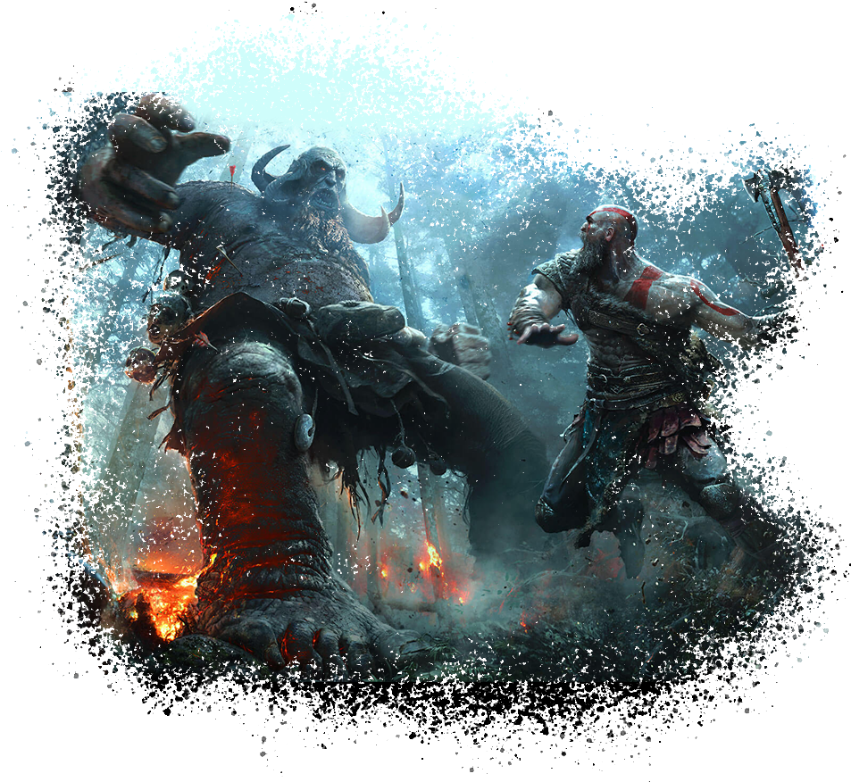
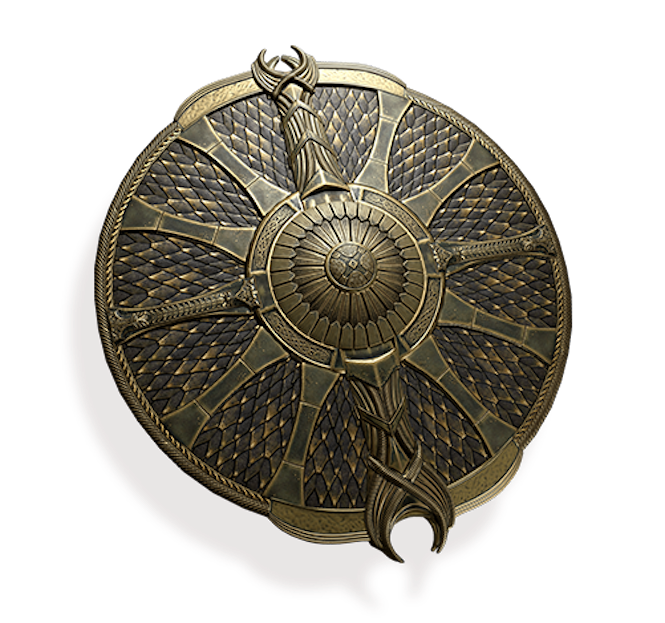

Os protagonistas do jogo são Kratos e seu jovem filho Atreus . Kratos é um guerreiro natural de Esparta que se tornou o deus grego da guerra e é filho de Zeus. Depois de terminar na antiga Noruega, ele conheceu sua segunda e agora falecida esposa, Laufey (chamada de Faye), com quem teve um filho, Atreus. Atreus que não sabe sobre o passado de Kratos ou sobre sua natureza divina, mas consegue ouvir os pensamentos de outros seres.
Inimigos

Na jornada, Kratos e Atreus encontram a Serpente do Mundo, Jörmungandr, que se mostra amigável. Depois de encontrar uma espécie de névoa negra que só pode ser penetrada por uma luz especial do reino de Álfheim, eles recebem ajuda da Bruxa da floresta para recuperar a luz. Ao chegar ao pico de Midgard, eles ouvem uma conversa entre o misterioso homem, revelado como sendo Baldur, dois homens e um prisioneiro chamado Mímir. Depois que eles saem, Kratos e Atreus conversam com Mímir, que está preso há 109 invernos em uma árvore e teve um dos olhos arrancado. Ele revela que o ponto mais alto dos nove reinos e, portanto, o objetivo deles fica em Jotunheim, a terra dos Gigantes. No entanto, há muito a viagem para o reino foi bloqueada, com a intenção de afastar Odin e Thor. Mímir, no entanto, conhece outra passagem. Ele instrui Kratos a cortar a sua cabeça e revivê-lo através da bruxa, que é revelada como a deusa Freya, o que faz com que Kratos imediatamente desconfie dela. Tanto Freya quanto Mímir avisam que Kratos deve contar a seu filho sobre sua verdadeira natureza.
Mundo Nordico

Enquanto os primeiros sete jogos foram vagamente baseados na mitologia grega, este título leva a série à mitologia nórdica. Seis dos nove reinos da mitologia nórdica podem ser explorados. Antecedendo os Vikings, a maioria do jogo ocorre na antiga Noruega no reino de Midgard, habitado por seres humanos e outras criaturas e é o mesmo reino que o mundo grego havia existido. Quanto mais criaturas começaram a aparecer muitos humanos fugiram. Outros reinos visitados como parte da história incluem Alfheim, a casa mística dos elfos da luz e das trevas, Helheim, a terra gelada dos mortos, e Jotunheim, a terra montanhosa dos gigantes. Reinos exploráveis opcionais incluem Niflheim, um reino que possui uma neblina venenosa com uma estrutura de recompensas parecida a um labirinto, e o reino de fogo Muspelheim, caracterizando as seis Provas de Muspelheim; A conclusão de cada prova concede recompensas e Kratos e Atreus avançam para mais perto do topo de um grande vulcão. O acesso aos outros três reinos – Asgard, lar dos deuses Æsir, Vanaheim, lar dos deuses Vanir e Svartalfheim, lar dos anões – foi bloqueado pelo governante de Asgard e dos deuses Æsir, Odin. No centro dos reinos está a árvore mítica Yggdrasil, que conecta cada reino. Embora cada reino seja um mundo diferente, eles existem simultaneamente no mesmo espaço. Viajar para os reinos pode ser feito pelo uso da Bifröst, uma raiz da Yggdrasil contida dentro de um templo localizado no centro do Lago dos Nove. O templo foi criado pelo então morto Tyr, um pacífico Deus da Guerra que viajou para outras terras e aprendeu sobre suas mitologias; Odin o matou porque acreditava que Tyr estava secretamente ajudando os gigantes e tentaria derrubá-lo.